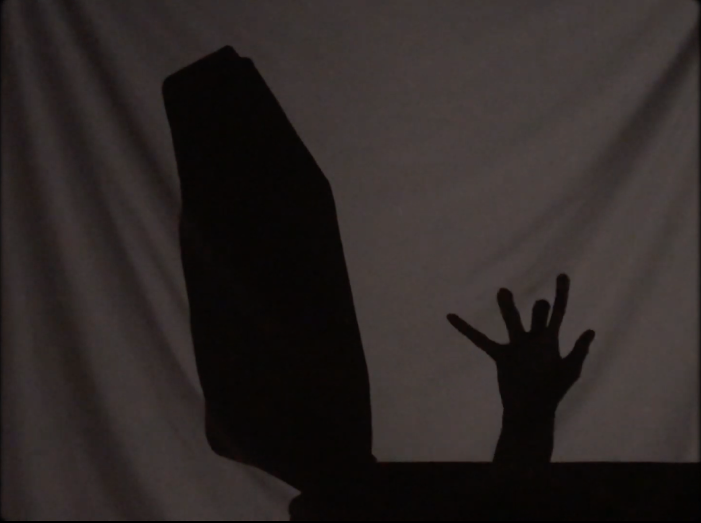
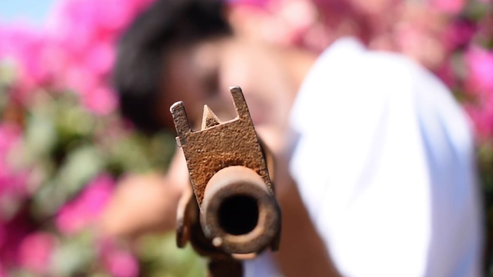
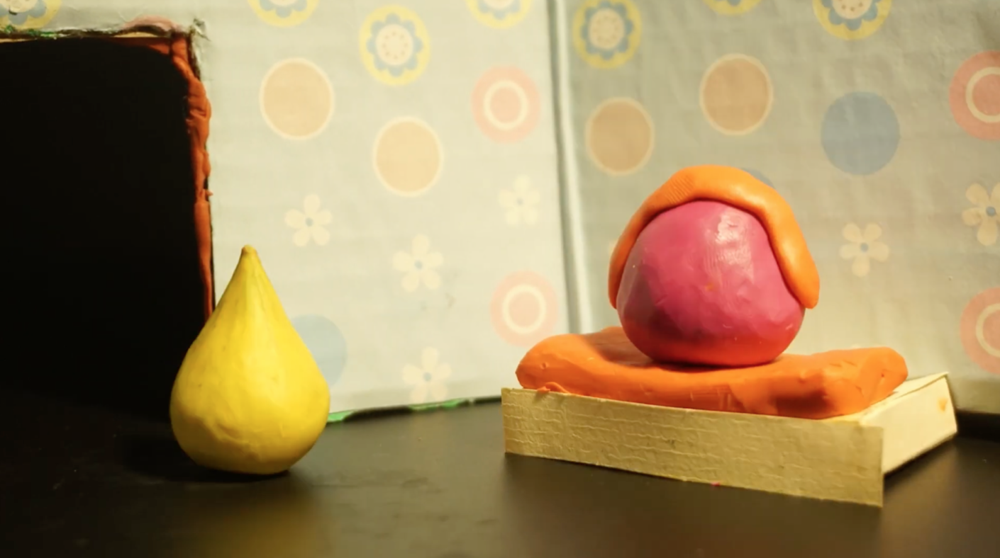

La idea

Desde hace mucho, mi familia ha querido documentar la vida de mi abuelo. Creció en medio de la nada sin un buen sistema escolar a su alcanze, y su familia quería que trabajara en el campo, lo cual se rehusó a hacer. En cambio, aprendió carpintería y a hacer radios, y se mudó a la ciudad donde pasó de trabajo en trabajo empezando en una gasolinera y eventualmente convirtiéndose en encargado de línea en Kodak.
My tía, que es maestra, trató de escribir su historia alguna vez. Yo también. Mi hermana igual lo intentó. Pero por alguna razón, nunca completamos el proyecto, probablemente porque pensábamos que teníamos todo el tiempo en el mundo.
Cuando mi abuela materna falleció durante el inicio de la pandemia, me di cuenta que no tenía todo ese tiempo. Pero escribir una biografía aún me intimidaba. Así fue que pensé... ¿Por qué estoy tratando de escribirla? Si yo hago cine... ¿Por qué no transformarla en una película?

Los obstáculos
Entendí desde un principio que tenía dos problemas: demasiado contenido (toda una vida) y muy poca experiencia para crear algo más largo que un cortometraje. Sabía que tenía que encontrar una mejor solución.
También me di cuenta que esto no podía ser un proyecto solamente acerca de mi abuelo: tenía que tratar de mi abuela también, que ha tenido sus propias aventuras increíbles que igualmente quiero preservar.
Preservar. Una palabra aterradora. ¿Cómo se puede escavar al pasado de alguien y extraer la verdad que ocurrió? Esta palabra me había paralizado por tanto tiempo. No creía que podía accesar al pasado de esa forma. Si quería descubrir los recuerdos de mis abuelos... tenía que acercarme de un ángulo diferente.
Haciendo la película

Nuestro proceso empezó durante la pandemia. Mi hermana y yo entrevistamos a nuestros dos abuelos, preguntándoles desde sus infancias hasta su matrimonio. Después de un par de meses, revisé nuestras grabaciones y escogí un grupo de anécdotas que se podrían presentar por sí mismas y en conjunto: cuatro del abuelo Alberto, cuatro de Lita y dos contadas por ambos.
Una vez que dividí las entrevistas en estos capítulos, recluté de mis amigos y compañeros a un equipo de directores (originalmente diez, además de mí).
Les ofrecí mi perspectiva: que la magia del proyecto vendría en su naturaleza fragmentada y que mi prioridad era ayudar a construir la visión única de cada director.
El objetivo no era solo recordar, sino volver a imaginar y meditar en el poder de las historias en lo que pasan de una generación a otra. Era celebrar el patrimonio y encontrar paz en el paso del tiempo; de una realidad a recuerdo a narración a imaginación a creación y percepción. La propagación de una perspectiva latinoamericana y mexicana.
Le di orientación a cada director al escoger su historia, explorar ideas y desarrollar su pieza en el collage. Supervisé la producción de cada cortometraje, pasando por éxitos y fracasos, levantándonos de nuevo cuando unos colaboradores tuvieron que abandonar el proyecto y continuando a empujar adelante al equipo.
La premiere

Seis de enero del 2022; es el aniversario de mis abuelos y estoy sentado en mi sala —un año después de nuestra primera entrevista— junto a ellos, enseñándoles el proyecto completado en nuestra televisión y preocupándome de que van a acusarme de no mantenerme fiel a su historia o que no comprenderán lo que hicimos. Se ríen, suspiran y comentan con cada cortometraje... "Estaba lleno de murciélagos ese edificio" dice mi abuelo cinco segundos antes de que un murciélago aprece en la pantalla, como si el proyecto siguiera los comentarios que mi abuelo hace hoy.
Al final de la película de una hora, me doy la vuelta hacia ellos. Mi abuela llora, se acerca a abrazarme y me dice que aunque no va a estar conmigo para ver qué alcanzaré a hacer como cineasta, cree en mí y está orgullosa. Y yo, no necesitaba nada más que eso.
Créditos
Productor
Sebastián Ibarra del Castillo
Co-productora
Andrea Ibarra del Castillo
Narrado por
Luz Ilusión Pardo de Ibarra &
Alberto Ibarra González
Diseño gráfico de capítulos
Chad Buley
Entrevistadores
Sebastián Ibarra del Castillo
Andrea Ibarra del Castillo
Escrito por
Sebastián Ibarra del Castillo
Capítulo 1: Carreteras
Dirección, edición y fotografía
Sebastián Ibarra del Castillo
Co-productor
Luis Alberto Ibarra Pardo
Gracias especiales
Juan Carlos Murillo
Capítulo 2: Dibujos
Dirección y animación
Ella Grace Rodriguez
Música
Daniel Montes de Oca
Capítulo 3: Consuelo
Dirección, edición y fotografía
Aristotle Hartzell
Música
Bruno Bernal
Mixing de música
Kofi Graves
En orden de aparición:
Adam Guzman
Salvador P. Alvarez
Grace Burton
Aristotle Hartzell
Salomón Huerta
Evan Hartzell
Gracias especiales
Catalina Huerta
Jacob Winthrop
Laura Alvarez
Richard Alvarez
Ysidro Hartzell
Y mis abuelitos
Capítulo 4: Extraños
Dirección y animación
Ana Flavia Veiga
Capítulo 5: Ataúdes
Dirección, edición y fotografía
Sebastián Ibarra del Castillo
Actuación
Luis Alberto Ibarra Pardo
Sebastián Ibarra del Castillo
Verónica del Castillo Contreras
Con ayuda de
Verónica del Castillo Contreras
Luis Alberto Ibarra Pardo
Capítulo 6: Sobrecito
Dirigido, creado y editado por
Gabriela Bazaldúa
Dibujos por
Gabriela Bazaldúa
Capítulo 7: Radios
Dirección y animación
Chad Buley
Música
Leo Major
Capítulo 8: Kodak
Dirección, edición, fotografía y animación
Michelle Pugh
“Forest Walk” de Alexander Nakarada
https://soundcloud.com/serpentsoundstudios/
forest-walk-no-copyright-relaxing-fantasy-music
Capítulo 9: Encuentro
Dirección, edición y fotografía
Sofia Uribe
Música
Santiago Maldonado Galaviz
Actuación
Pablo Uribe
Fernanda Uribe
Sofia Uribe
Capítulo 10: Novios
Dirección, edición y fotografía
Sebastián Ibarra del Castillo
Música
Daniel Montes de Oca
Dirección de arte
Andrea Ibarra del Castillo
Asistentes de cámara
Andrea Ibarra del Castillo
Sofía Ugalde Cacho
Actuación
Alberto Ibarra González
Luz Ilusión Pardo de Ibarra
Poema: “The Mind” by Silvio Pellico
Otros
Traducción de subtítulos al inglés
Sebastián Ibarra del Castillo
Andrea Ibarra del Castillo
Aitana Olarra
Ana Karen Catalá
Gabriela Bazaldúa
Heidi Atlas
Gracias especiales a
Verónica del Castillo Contreras
Luis Alberto Ibarra Pardo
Daniela Robles
Livan Felix
Santiago Flores Medina
Aylish Turner
Dedicado a Male y Go
A
Beto, Caro, Carlos, Chacha, Coco, Consuelo,
David, Isabel, Julieta, Licha, Miguel, Marta,
Martocha, Maru, Nacho, Paco, Sergio,
Socorro and all my other great aunts and uncles,
así como a sus historias…
A mi familia.